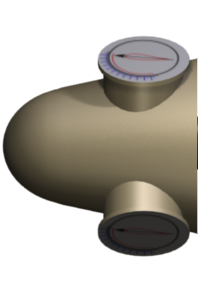
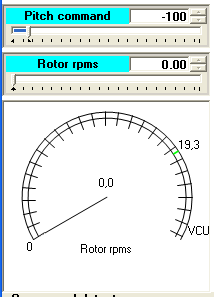

This part of the synoptic shows the Hub, rotating at the rotor speed specified in the circular widget of the bottom and the slider above it. The green zone indicates the range of rotor speed during production. That zone depends on the type of connection of to the Grid (Large or Small). The "VCU" mark represents the rpms at which the V Centrifugal Unit of the Blades fires.
It also presents the profile of the Blades rotated according to the pitch angle.
|
 |
 |